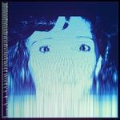

Music Reviews
-

Steven Wilson The Future Bites
On The Future Bites, the veteran english multi-instrumentalist falls into an understandable quandary that many art rock artists have found themselves in before: social commentary. He finds himself doubling down on the nonsense and scrapping subtext altogether.
Ethan Gordon reviews... -
Weezer OK Human
The veteran rock band's 14th LP is similar to their other projects in terms of Cuomo’s lazy songwriting, but the layered arrangements help turn it into a surprisingly listenable endeavor.
Ethan Gordon reviews... -

Arlo Parks Collapsed in Sunbeams
On her debut LP, the British singer-songwriter's efficient, lyrically-acute bedroom pop invites deep reflection—even if occasionally passes as little more than pleasant background music.
Juan Edgardo Rodríguez reviews... -

Danielle Durack No Place
On her third LP, the Arizonian singer-songwriter chronicles the end of a relationship with equal parts subtlety and force.
Ethan Gordon reviews... -
Kiwi Jr. Cooler Returns
On their second LP, the Canadian indie rockers are back in the fray.
Mark Moody reviews... -
Shame Drunk Tank Pink
On their second LP, the South London post-punk quintet make a giant leap towards the avant-garde side of post-punk—dealing with the drudgery of young adulthood as they prepare for what comes next in their lives.
Juan Edgardo Rodríguez reviews... -

Buck Meek Two Saviors
The Big Thief guitarist's debut album has an overwhelmingly inviting and warm atmosphere. It makes a fine argument that he should be taken seriously as his own artist.
Ethan Gordon reviews...
-

The Avalanches We Will Always Love You
No longer weighed down by their iconic debut, The Avalanches head for the skies on their impressive third album. [Believe the Hype]
Matthew Smith reviews... -
Taylor Swift Evermore
By using the comforting musical territory of Folkore as a backdrop to explore old relationships, new thematic ideas, and haunting songwriting, Evermore acts as a rare sequel that improves upon the initial piece of art.
Ethan Gordon reviews... -

Dave Vettraino Exercise
The indie rock producer's calming instrumental debut album works in fascinating ways: most have a mechanical feeling, but they tighten up and unwind in cycles, moving in a circular and cutting fashion.
Ethan Gordon reviews...